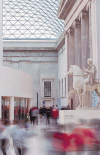

|
|
|
about
us > the departments |
|||
|
|
The Departments Curatorial
and Scientific Departments In 1807 the antiquities were split off from natural history and a Department of Antiquities was set up. The following year Prints and Drawings were removed from the library departments and became a sub-division of the Department of Antiquities with its own Keeper, becoming independent in 1836. In 1861, on the retirement of the then Keeper, Edward Hawkins, the Department of Antiquities was divided into (1) Coins & Medals; (2) Greek & Roman Antiquities; (3) Oriental Antiquities. A sub-department of British & Medieval Antiquities and Ethnography was attached to the latter. This became a separate Department in 1866. In 1886 the Department of Oriental Antiquities changed its name better to reflect its holdings and became the Department of Egyptian & Assyrian Antiquities. In 1912 a separate sub-department of Oriental Prints & Drawings, was created. Between the two world wars there were further changes. The Department of Ceramics & Ethnography was established in 1921, housing both western and oriental ceramics as well as ethnography. In 1933 western ceramics returned to the Department of British & Medieval Antiquities. In 1946 separate Departments of Ethnography and Oriental Antiquities were established. A decade later, in 1955, Egyptian and Assyrian Antiquities split into (1) Egyptian Antiquities; (2) Western Asiatic Antiquities. In 1969 British & Medieval Antiquities also divided into (1) Prehistoric & Romano-British Antiquities; (2) Medieval & Later Antiquities. Japanese Antiquities split from Oriental Antiquities in 1987. In recent years there have been a number of changes of name but not of function: Ancient Egypt & Sudan (Egyptian Antiquities); Ancient Near East (Western Asiatic Antiquities); Medieval and Modern Europe (Medieval & Later Antiquities); Prehistory & Early Europe (Prehistoric & Romano-British Antiquities). On 1 April 2003 Prehistory & Early Europe and Medieval & Modern Europe were reunited to become the Department of Prehistory and Europe. Japanese Antiquities returned to Oriental Antiquities which became the Department of Asia. In 1931 the Museum set up a permanent Research Laboratory (a temporary laboratory had been introduced in 1920). This divided in 1975 into (1) Research Laboratory - scientific research and (2) Conservation & Technical Services - conservation. These departments were reunited in 1982 but divided again in 1985 as (1) Scientific Research; (2) Conservation. Since 2002 they have again merged as the Department of Conservation, Documentation & Science. Principal
Librarians and Directors of the British Museum Appointed |
 | |
|
home | visit | what's on | join
| shop |
learning | COMPASS
|
world cultures | sitemap | contact us | copyright © The British Museum, 2003
|
|||